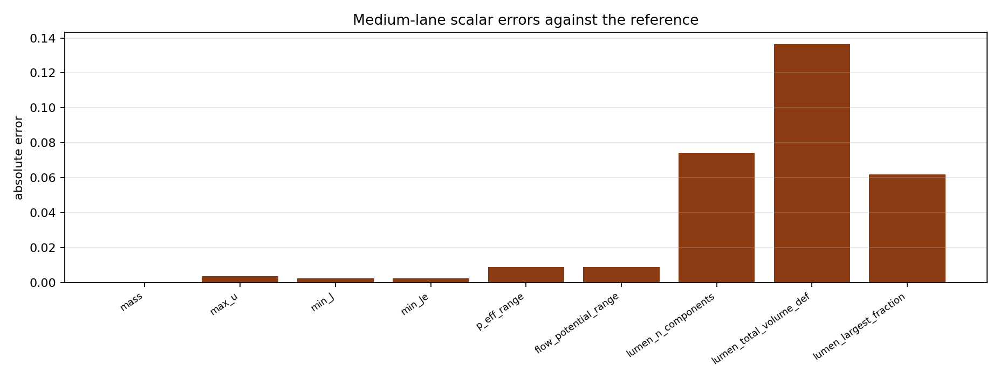

Benchmark
CHB No-Growth Ladder
Family: reference-ladders
Coarse and medium retained-accuracy ladder against an overkill no-growth reference.
Target and Success Criteria
target_kind: Overkill reference
Tier: full
Unknowns active: pf, u, p, theta
Frozen terms: benchmark geometry and no-growth physics
Comparison grammar: Achieved / Target
Tickets: None
What This Benchmark Verifies
This ladder measures retained accuracy against an overkill reference so the public page reads like an analytic target page, but with the reference explicitly labeled.
coarse_max_merge_time_error
s
pass
medium_max_merge_time_error
s
pass
Primary Plots
plot

Medium-lane scalar errors measured against the overkill reference target.
plots/medium-scalar-errors.png
Figures and Media
No media artifacts provided.
Scalar Summary
| Label | Value | Unit | Comparison | Threshold | Severity |
|---|---|---|---|---|---|
| coarse_max_merge_time_error | 0.00025 | s | 0 | 0 | pass |
| medium_max_merge_time_error | 0.00075 | s | 0 | 0 | pass |
Evidence Table
| Label | Metric | Comparison | Threshold | Severity |
|---|---|---|---|---|
| reference_levels | levels | coarse, medium | coarse, medium | pass |
Series Overview
| Plot | Group | Observable | Case | Level | Target |
|---|---|---|---|---|---|
| coarse_mass | reference_target | mass | coarse | coarse | overkill reference |
| coarse_max_u | reference_target | max u | coarse | coarse | overkill reference |
| coarse_min_J | reference_target | min J | coarse | coarse | overkill reference |
| coarse_min_Je | reference_target | min Je | coarse | coarse | overkill reference |
| coarse_p_eff_range | reference_target | p eff range | coarse | coarse | overkill reference |
| coarse_flow_potential_range | reference_target | flow potential range | coarse | coarse | overkill reference |
| coarse_lumen_n_components | reference_target | lumen n components | coarse | coarse | overkill reference |
| coarse_lumen_total_volume_def | reference_target | lumen total volume def | coarse | coarse | overkill reference |
| coarse_lumen_largest_fraction | reference_target | lumen largest fraction | coarse | coarse | overkill reference |
| coarse_pf_field | field_error | pf field error | coarse | coarse | overkill reference |
| coarse_u_field | field_error | u field error | coarse | coarse | overkill reference |
| coarse_p_field | field_error | p field error | coarse | coarse | overkill reference |
| coarse_theta_field | field_error | theta field error | coarse | coarse | overkill reference |
| medium_mass | reference_target | mass | medium | medium | overkill reference |
| medium_max_u | reference_target | max u | medium | medium | overkill reference |
| medium_min_J | reference_target | min J | medium | medium | overkill reference |
| medium_min_Je | reference_target | min Je | medium | medium | overkill reference |
| medium_p_eff_range | reference_target | p eff range | medium | medium | overkill reference |
| medium_flow_potential_range | reference_target | flow potential range | medium | medium | overkill reference |
| medium_lumen_n_components | reference_target | lumen n components | medium | medium | overkill reference |
| medium_lumen_total_volume_def | reference_target | lumen total volume def | medium | medium | overkill reference |
| medium_lumen_largest_fraction | reference_target | lumen largest fraction | medium | medium | overkill reference |
| medium_pf_field | field_error | pf field error | medium | medium | overkill reference |
| medium_u_field | field_error | u field error | medium | medium | overkill reference |
| medium_p_field | field_error | p field error | medium | medium | overkill reference |
| medium_theta_field | field_error | theta field error | medium | medium | overkill reference |
Cases
Case
coarse
Coarse candidate compared against the reference lane.
Case
medium
Medium candidate compared against the reference lane.
Case
reference
Overkill reference lane used as the target for accuracy calculations.